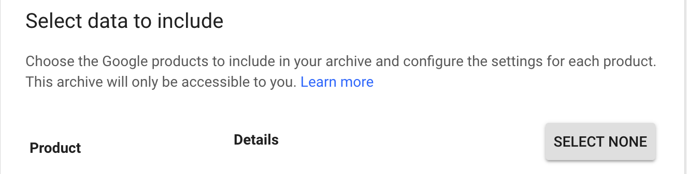
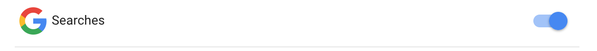
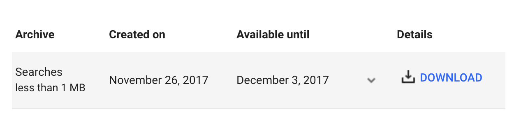
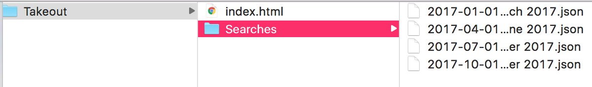

1. Open Chrome
2. Make sure you are signed into your Google account
3. Go to This Link
4. Click "Select None"

5. Scroll down and select Searches. (If you don't see Searches as an option, this means that you don't have a history! Congrats. You could also be signed into the wrong Google account. For example, maybe a work or school account.)

6. Click Next
7. Click Create Archive
8. Wait until archive is done loading. Then hit Download.

9. Google will prompt you to sign in again before your download begins.
10. When you unzip the downloaded file it should look like this (you may have more or less .json files depending on how often you clear your search history)

11. Now that you've downloaded your data, you may or may not want to delete your history from Google. You can do so here.
12.